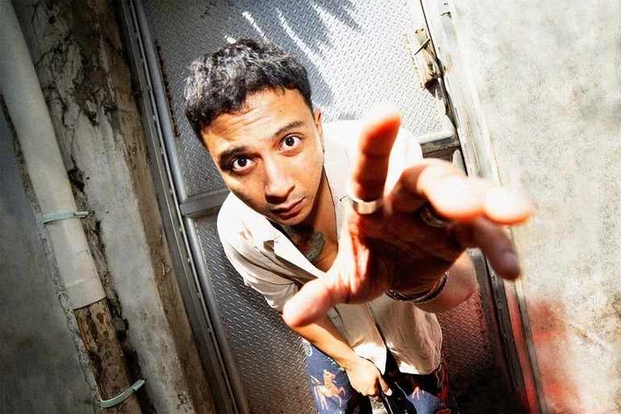
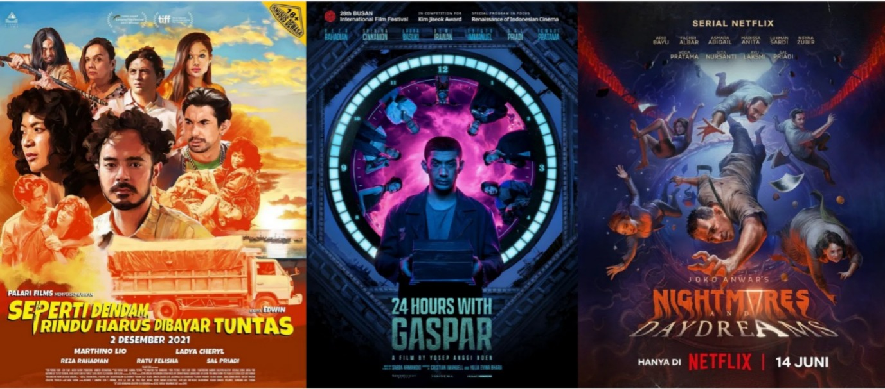
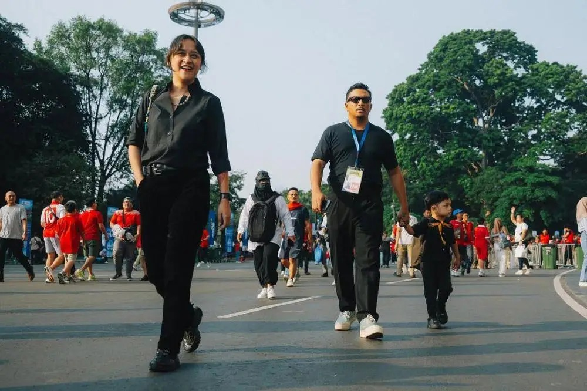

Tentang Sal

Salmantyo Ashrizky Priadi — atau yang lebih kita kenal sebagai Sal Priadi — lahir di Malang, 30 April 1992, dan tumbuh dari puisi-puisi masa SMP yang diam-diam ditulisnya di buku catatan. Dari sana, perjalanan panjang dimulai.
Sal bukan hanya penyanyi. Ia adalah pencerita. Penulis lagu. Perangkai rasa. Kariernya dimulai sejak 2015, ketika ia mengunggah cover dan lagu-lagu original di SoundCloud, dibantu oleh Mahatamtama dan Derry dari Coldiac.
Tahun 2017, ia merilis single pertamanya “Kultusan”, disusul “Ikat Aku di Tulang Belikatmu” (2018) — lagu yang menyimpan makna personal tentang almarhum ayahnya. Single tersebut membawanya masuk nominasi Anugerah Musik Indonesia 2018 untuk kategori Artis Solo Pria Pop Terbaik.
Tahun 2018 menjadi momen besar lainnya. Sal merantau ke Jakarta bermodalkan Rp10 juta — hasil menggadaikan bangunan milik temannya. Sebuah langkah berani yang menjadi awal perjalanan panjangnya di industri musik.
Karya-karya setelahnya seperti “Melebur Semesta”, “Jangan Bertengkar Lagi Ya? OK? OK!” (diproduseri Pamungkas), hingga kolaborasi bersama Nadin Amizah lewat “Amin Paling Serius” semakin memperlihatkan kedewasaan musikalnya.
Pada 2020, ia merilis album debut “Berhati”. Lalu hadir mini album “MARKERS AND SUCH” (2022), terinspirasi dari alat tulis di rumahnya. Album keduanya, “MARKERS AND SUCH PENS FLASHDISKS” dirilis pada 30 April 2024, dengan lagu seperti “Dari Planet Lain” dan “Gala Bunga Matahari” yang sukses membawanya meraih AMI 2024 – Best Male Pop Solo Artist.
Sal, Sang Multitalenta

Film-Film yang Diperankan Sal Priadi
Tak hanya dikenal sebagai musisi, Sal Priadi juga merambah dunia seni peran. Ia tampil dalam sejumlah film, di antaranya Seperti Dendam, Rindu Harus Dibayar Tuntas dan 24 Hours with Gaspar, serta berbagai proyek teater lainnya.
Selain film layar lebar, Sal juga tampil dalam serial seperti Imperfect The Series (episode 2) dan Joko Anwar's: Nightmares and Daydreams pada episode 1 berjudul The Old House, di mana ia memerankan seorang montir bernama Bambang.
Menariknya, Sal Priadi juga terlibat sebagai pengisi suara karakter Max si Singa dalam film animasi Paddle Pop: Game On yang dirilis pada tahun 2025. Perannya sebagai Max menunjukkan sisi lain dari kreativitasnya, sekaligus memperluas kiprahnya di dunia hiburan sebagai pengisi suara animasi.
Tentang Rumah & Cinta

Di tahun 2019, Sal menikah dengan Sarah Deshita Affandi. Dari pernikahan mereka, lahirlah seorang putra bernama Sejak Barat pada 12 Mei 2020.
Banyak karya Sal lahir dari cinta pada keluarga kecilnya. Lagu seperti “Kita Usahakan Rumah Itu”, “Mesranya Kecil-Kecilan Dulu”, dan “Serta Mulia” adalah potongan rasa yang ia bagikan untuk rumahnya.
Lagu Pertama Sal Priadi

Kultusan (2020)